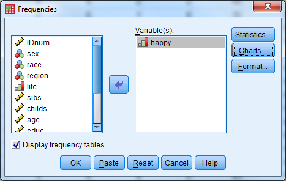
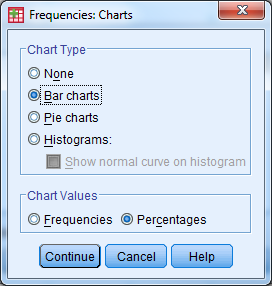
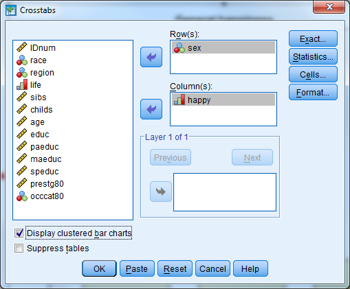
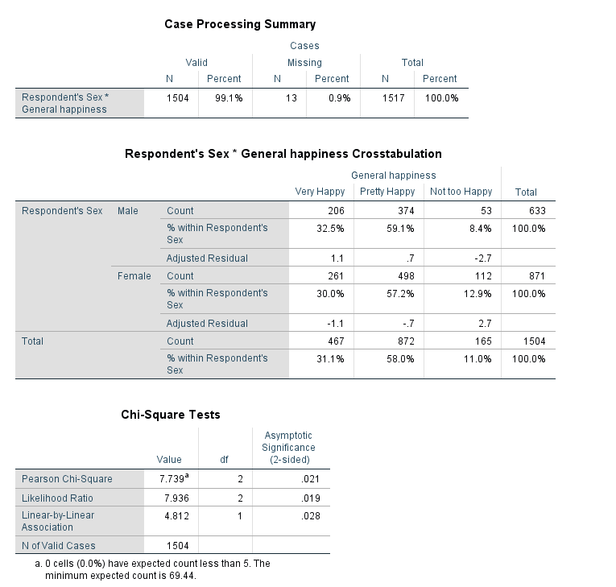
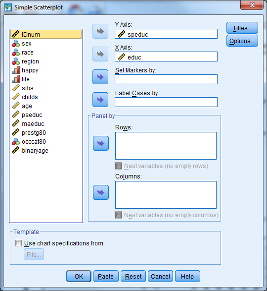
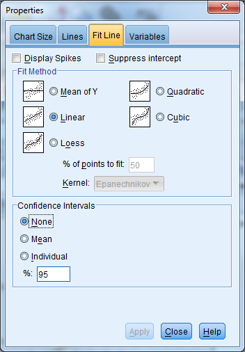
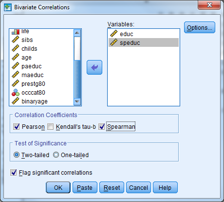

Chapter 11 Exercise A1 Solution
Question 1
Open Exercise12_Data. What percent of respondents said they were “Very Happy”? What about “Not too happy”? “Pretty happy”? Use a graph to display the variable.
Solution:
We have one categorical variable that we would like to investigate…check the all on one page handout!
Analyze - Descriptive Statistics - Frequencies

Enter the following information
Select happy
Select Charts
Under Chart Type, select Bar Chart
Under Chart Values, select Percentages
Select Continue
Select the box for Display Frequency Tables
Select OK



Question 2
Do women appear to be more or less happy than men? Would you say this apparent relationship is statistically significant?
Solution:
We are going to compare two categorical variables. From out handout, we will use Pearson Chi-Square crosstabs to do this!
Analyze - Descriptive Statistics - Crosstabs
Enter the following information
Rows: sex
Columns: happy

Select the Statistics button
Check the box for Chi-Square
Select Continue

Select the Cells button
Check the box for Row under Percentages (leave the rest as default)
Check the box for Adjusted Standardized Residuals under Residuals (leave the rest as default)
Select Continue
Select the box for Display Clustered Bar Charts
Select OK

The Pearson Chi-Square statistic indicates that the differences between men and women are statistically significant (pvalue/asymptotic significance<.05).
The residuals, clustered bar chart, and row percentages can tell us where these differences arise
An adjusted standardized residual (absolute value) greater than two shows us where the differences between groups occur. Here, we see that “not too happy” for males and females has a residual greater than 2.
The row proportions indicate that there is a higher proportion of females that responded “not too happy” when compared to males.
The clustered bar chart also shows that there are greater numbers of women that indicate that they are “not too happy”.


Question 3
Create a scatter plot of respondent’s education vs. their spouses’ education. Does this relationship appear to be linear? Add a linear regression line to the plot. Inspect the correlation between the respondent’s education and their spouses’ education. Is this correlation positive or negative? Is it statistically significant.
Solution:
Graphs - Legacy Dialogues - Scatter/Dot
Simple Scatter and Define
Enter the following information
Y Axis: speduc
X Axis: educ
Select OK
Check the output for the scatter plot
Double click the plot in the Output Viewer to open Chart Editor
Select the button for Add Fit Line at Total (first bar above the plot, axis with straight line plot)
Select Linear Fit, Apply, Close
Close out of chart editor (red X in the upper right corner) and the updated chart will appear in the Output Viewer.
“Analyze” “Correlate” “Bivariate”
Enter the following information
Variables: educ, speduc
Correlation coefficients: Pearson, Spearman
Significance: Two Tailed
Check the box for Flag significant correlations
Select OK
The output indicates that the correlation between education and spouses’ education is positive and statistically significant.
Save this data set as Exercise11_Data_Updated





